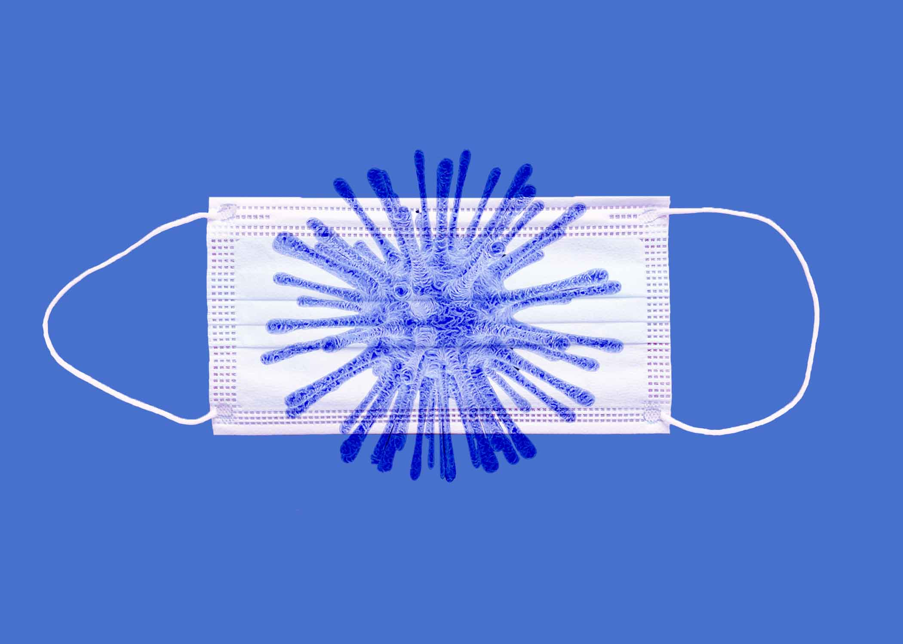
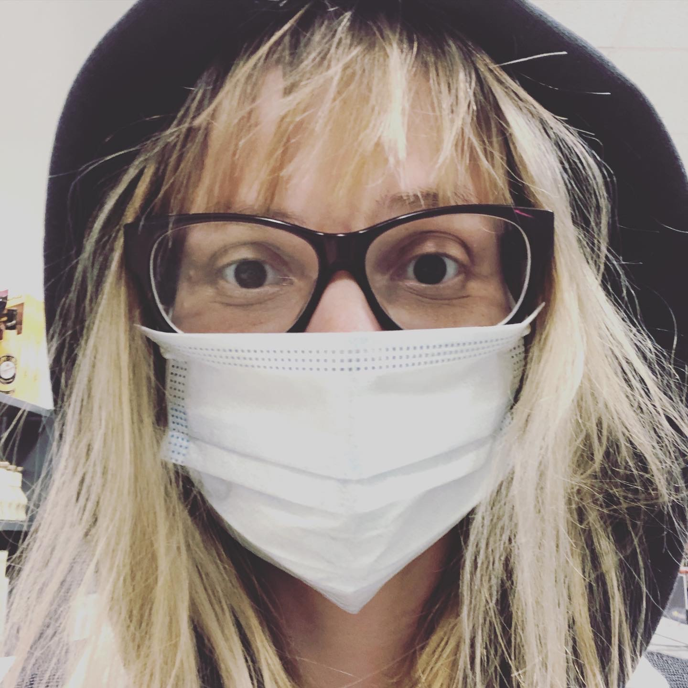
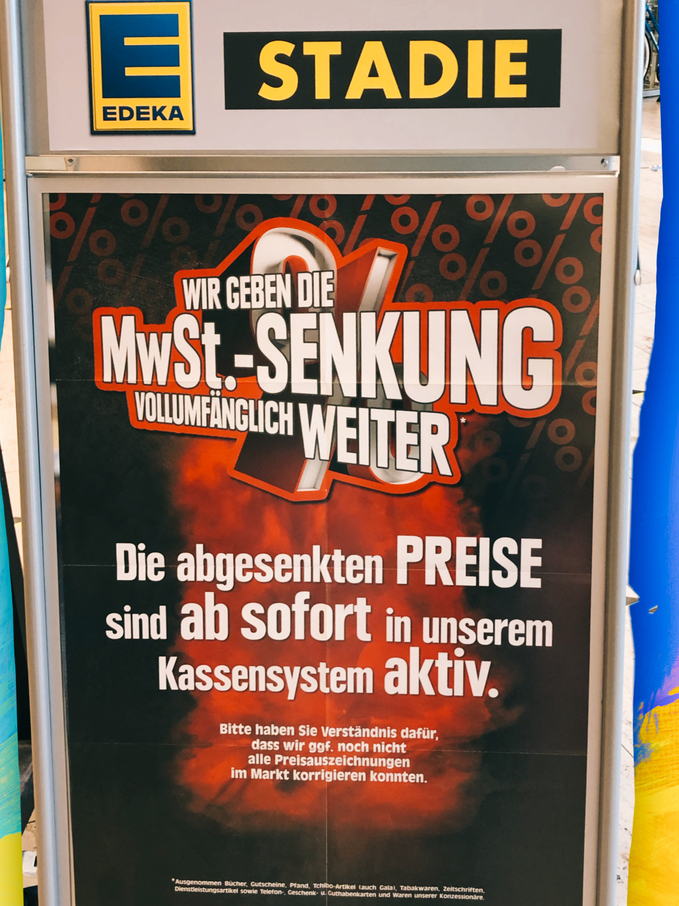

Dienstag, 30. Juni 2020, früher Abend: In der Mall in Sonderburg, Dänemark. Mindestabstandsregelung ist überflüssig, denn es sind kaum Menschen da.
Flanieren durch Sonderburg. Ein Cappy, ein Schal fertig ist der Scheich. Ohrenschutz in Farbe. Einfach und Stylisch.
Gleicher Tag in Sonderbung am Strand. Sonnig. Windig. Hörst Du den Wind? Da haben Aerosole keine Chance. Ohrenschutz statt Maske.

Ein neues Accessoire.
Statt Mundschutz ein Kleidungsstück.
Für jede Gelegenheit eine passende Maske.

Im Supermarkt.
Wird die Maske bald in Mode übergehen oder ist es nur ein vorübergehender Anblick?
Wird die Maske bald in Mode übergehen oder ist es nur ein vorübergehender Anblick?
Wie mächtig ist Corona?
Eigentlich ist das Infektionsgeschehen eingedämmt, die Gastronomen eröffnen wieder, die Grenzkontrollen fallen, der Sommerurlaub ist in Sicht. Doch woanders fangen die Probleme erst an: !Verschwörungstheorien.
Eigentlich ist das Infektionsgeschehen eingedämmt, die Gastronomen eröffnen wieder, die Grenzkontrollen fallen, der Sommerurlaub ist in Sicht. Doch woanders fangen die Probleme erst an: !Verschwörungstheorien.

Edeka Einkaufserlebnis mit Regeln.
Abstands-und Hygieneregeln durch den Einkaufswagen gesichert.
Tröpcheninfektion durch die Maske eingedämmt. Auch die Aerosolbildung kann durch die Maske verhindert werden, laut
Virologe Christian Drosten.

Edeka MwSt. - Senkung.
Edeka gibt die Mehrwert-Steuersenkung, befristet auf 6 Monate, komplett and den Konsumenten weiter,
Überblick.